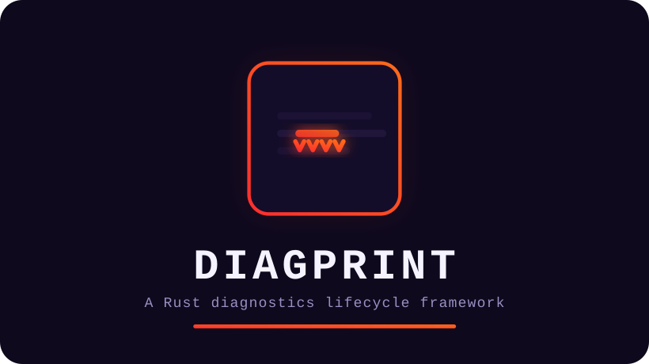

error[framework]: diagprint is a Rust diagnostics lifecycle framework
--> README.md:9:1
|
9| Define diagnostics once, carry them through terminal output,
| compiler tooling, editors, CI, code scanning, guarded
| remediation, verification, telemetry, privacy-aware export.
| ^^^^^^^^^^^^^^^^^^^^^^^^^^^^^^^^^^^^^^^^^^^^^^^^^^^^^ the whole diagnostic lifecycle, not just error formatting
note[core-rule]
Diagnostics may explain and propose. Mutation must be explicit,
structured, validated, and reject uncertainty.
capabilities // 4 categories, 16 checks
rendering
- Rich terminal rendering
- Primary and secondary source labels
- Virtual and in-memory sources
- Immutable snapshots, per-source revisions
output formats
- JSON, Markdown, plain-text
- GitHub Actions annotations
- SARIF, for code-scanning tools
- rustc and Cargo diagnostic ingestion
remediation
- Guarded remediation
- Transactional multi-file fixes
- Post-fix verification
- Exact-byte artifact receipts
ci & forensics
- Canonical fingerprints, report digests
- Semantic deltas, baseline-aware CI
- Hash-chained history and lineage
- Case files via
diagprint why
forensics // diagprint why .diagprint/history 7f23a9d5c120
DIAGNOSTIC CASE FILE
schema: diagprint.forensics.case-file/v1
fingerprint: diagprint.canonical/v1:sha256:...
status: active chain-verified: true
first-seen: run=000002 label="baseline"
last-seen: run=000011 label="regressed"
history-runs: 12 observed-runs: 7 episodes: 2
EPISODES
#01 start=000002 last-active=000006 resolved=000007 runs=5
#02 start=000010 last-active=000011 resolved=active runs=2
install // Cargo.toml
+diagprint = "0.8.0"
repo syncing…